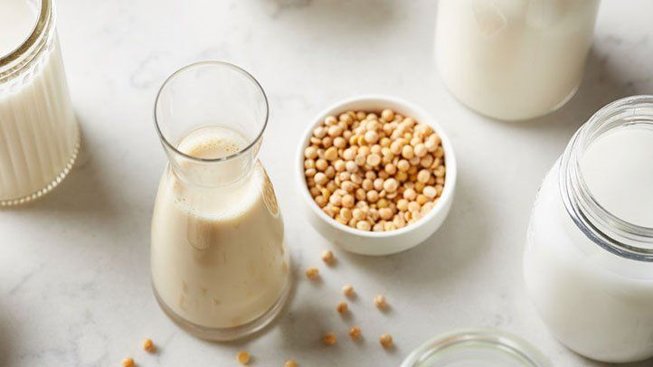

Recipe for Soy Milk

This is a recipe for Soy Milk. There will be no need for any other Soy Milk recipes after this one. Hope you enjoy!
Ingredients (4 servings)
- 1 Cup of soy bean
- water
- sweetner of choice
Steps to Make your Very Own Soy Milk
- throw beans into blender
- Blend until smooth
- pour into a large container through a cheese cloth and enjoy!
If you enjoyed this recipe make sure to check of our other recipes for Fried Rice and Sushi